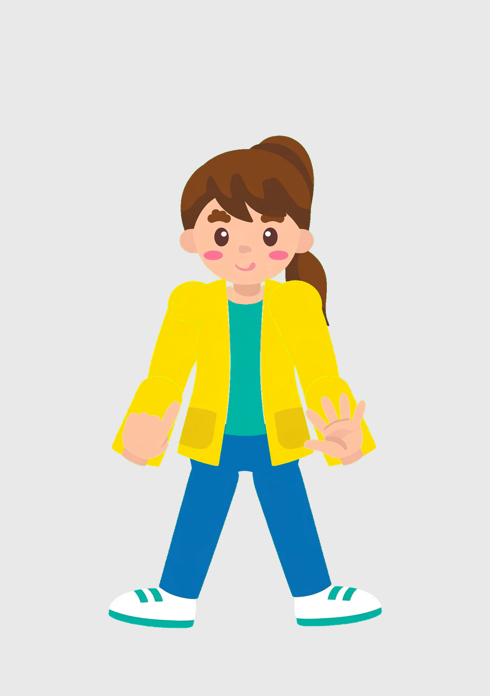
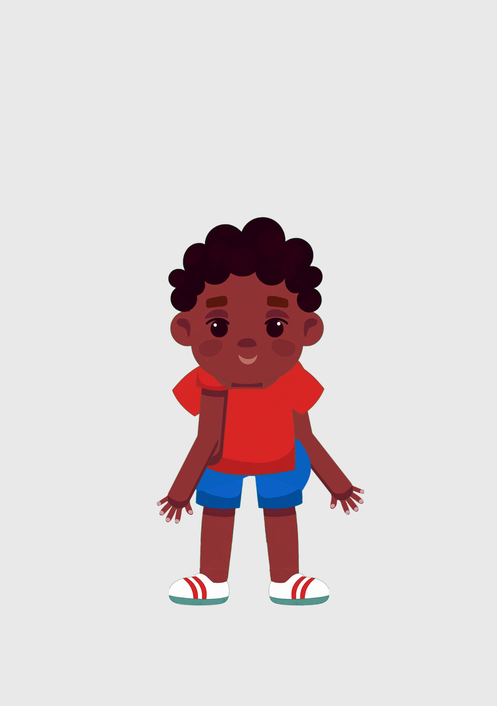
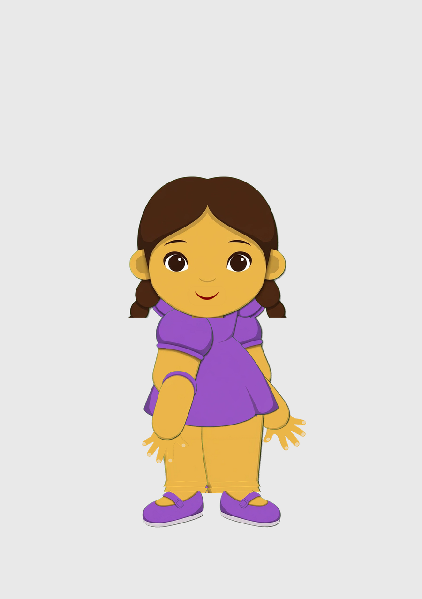
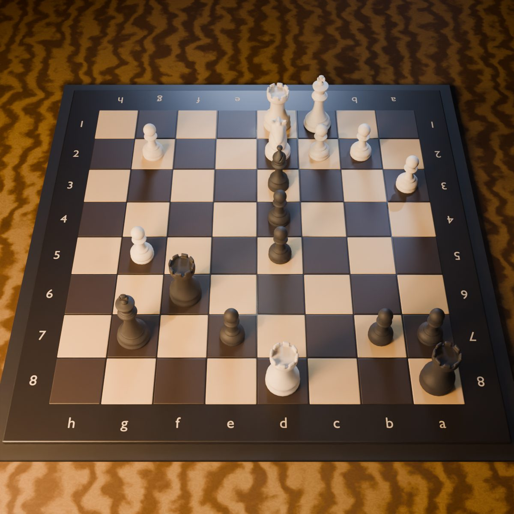

Miss Ana
The teacher. She leads the counting, the songs, and the questions.
The Studio
The studio makes original 2D cartoons for young children: preschool, kindergarten, first through third grade, and children who learn best at a slower pace. The first series is in production now.
The Series
The first episode, Miss Ana Counts to Five, is in production. Each episode has one learning goal and teaches it plainly. The words are simple. Ideas repeat on purpose, because repetition is how young children learn.
The structure never surprises. Captions run on every episode, the pacing stays calm, and there is no flashing and no sudden loud change. A child should always know what happens next, and a parent should always know what an episode teaches.
Stories and songs both carry the lessons. The scripts start in ScriptForge, the screenwriting tool the studio writes with.

The First Cast
Every character is drawn as separate parts, never cut out of one finished picture. Each one is built in several views, with hands for counting and pointing, so the rig can act with them honestly.
The teacher. She leads the counting, the songs, and the questions.

Part of the first cast, drawn piece by piece for the rig.

Part of the first cast, drawn piece by piece for the rig.
The elder of the cast, glasses, beard, and all.
The Pipeline
The story is written. Every script starts in ScriptForge, with one learning goal chosen before the first line.
The voices are recorded. Sound comes first at this studio. Nothing is animated until the voices exist.
The timing comes from the recording. Mouth shapes and pauses are pulled from the recorded sound, so the picture fits the words a child hears.
The characters are animated. AnimAIt, our own rig, moves the cast inside DaVinci Resolve, drawing on a growing library of actions.
Captions and a final watch. Captions go on, the music is laid in, and a person watches the whole episode before it is done.
Also in the Works
Nature's Trail is the studio's live action feature, and it is Shane Foster's own film. It is in development, and he has been writing it for four years. Every draft is written in ScriptForge, the writing tool he built because this film needed one.

The Other Bench
Our chess films are made in Blender on a standing set: a classic stone Staunton set on a flamed maple table, lit with fog and a hard side light, shot mostly from overhead. The set, the lights, and the camera rules are saved, so every film looks like it was shot in the same room.
The 2D cartoons and the 3D films are separate benches with one shared rule. The work has to read clearly at a glance, on a phone, the first time a viewer sees it.
The Road
A feature film is the long goal of this studio. The series is the training ground, and the standard set on a five minute counting episode is the standard the film will need.